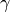

src.trans_e package¶
Submodules¶
src.trans_e.add_inverse_relations module¶
This script is used to add inverse relations to a Freebase relations dataset, e.g. /location/location/contains and /location/location/containedby.
-
add_inverse_relations(relations_inpath, relations_outpath, inverse_relations)¶
-
init_argparse()¶ Initialize all possible arguments for the argument parser.
Returns: ArgumentParser object with command line arguments for this script. Return type: argparse.ArgumentParser
-
main()¶ The main function. Uses command line arguments to start the script.
-
read_file_with_inverse_relations(inverse_inpath)¶ Read a Freebase information file where inverse relations are present and separated by a simple dot.
Parameters: inverse_inpath (str) – Path to Freebase relation file. Returns: Dictionary with a relation as a key and its inverse as value. Return type: defaultdict
src.trans_e.contains_entities module¶
This script analyses entities in the Freebase FB14k relations datatset and the tql wikidata dump.
This is handy because the Freebase API is deprecated nowadays. Also, this scripted was used to create the GER14k
dataset.
-
contains_entities(entities1, entities2)¶ Prints stats about two sets of entities.
Parameters: - entities1 (set) – First set of entities.
- entities2 (set) – Second set of entities.
-
create_new_dataset(entities1, dataset, outpath)¶ Write a new dataset only with relations which entities appear in a specific set.
Parameters: - entities1 (set) – Set entities in relations have to appear in.
- dataset (list) – Original dataset (a list of tuples).
- outpath (str) – Path to new dataset.
-
extract_entities_from_relation_dataset(dataset_inpath)¶ Extract all entities from the Freebase relations file.
Parameters: dataset_inpath (str) – Path to the Freebase file. Returns: Set of entities in the Freebase relations file.. Return type: set
-
extract_entities_from_tql_file(tql_path)¶ Extract all entities from the
tqlWikidata Freebase dump.Parameters: tql_path (str) – Path to tqlfile.Returns: Set of entities in the tqldump.Return type: set
-
init_argparse()¶
-
main()¶ Main function.
src.trans_e.differentiate_datasets module¶
This script analyses entities of two relation datasets (e.g. FB15k and GER14k!).
-
compare_entities(set1, set2)¶ Compares unique entities of two relation datasets. Also determines the size of their intersection.
Parameters: - set1 (list) – List of relation triples as tuples from dataset 1.
- set2 (list) – List of relation trilpes as tuples from dataset 2.
-
init_argparse()¶ Initialize all possible arguments for the argument parser.
Returns: ArgumentParser object with command line arguments for this script. Return type: argparse.ArgumentParser
-
main()¶ Main function
src.trans_e.partition_data module¶
This script partition the data of a relation dataset like FB15k into a training, validation and test set so it
can be used by TransE.
To make sure that no relation appears in the validation or test set that didn’t appear in the training set, data
will be partitioned relation-wise. To partition them intuitively is still an option, though.
-
check_data_integrity(data_inpath, remove_clones, outpath)¶ Check whether all triplets in the data are unique.
-
check_set_integrity(indir)¶ Checks the integrity of given training / validation / test sets (do triples with new relations appear in the validation or test, but not in the training set?).
Parameters: indir (str) – Directory of the datasets.
-
get_stats(data)¶ Returns some statistics about the given data, i.e. the number of unique entities, relations and their sum.
Parameters: data (list) – List of relation triples as tuples. Returns: #entities, #relations, #entities + #relations. Return type: tuple
-
init_argparse()¶ Initialize all possible arguments for the argument parser.
Returns: ArgumentParser object with command line arguments for this script. Return type: argparse.ArgumentParser
-
main()¶ Main function.
-
partition_data(data, prts, outdir, whole=True)¶
-
partition_relation_wise(data, prts)¶ Partition data into training, validation and test set.
Parameters: - data (list) – List of relation triples as tuples.
- prts (tuple) – Tuple of floats with each number corresponding to the desired percentage of data distributed to the corresponding set (% train set / % validation set / % tets set)
Returns: Tuple of the three data sets as lists of relation triples as tuples.
Return type: tuples
-
partition_whole(data, prts)¶
-
read_only_relations_into_set(inpath)¶ Only read the relation of a given relation dataset into a set.
Parameters: inpath (str) – Path to relation dataset. Returns: Set of dataset relation types. Return type: set
-
write_data_in_file(data, outfile)¶ Writes relation triples into a file.
Parameters: - data (list) – List of relation triples as tuples.
- outfile (str) – Path the triples should be written to.
src.trans_e.trans_we module¶
This module follows a modified approach from (Bordes et al., 2013). As so, noise-contrastive learning and corrupt triples are use. But whereas in this original paper, vector representations forn entities and relations are learned in a joint manner, in this case only the continuous representations for semantic relations will be learned and word embeddings used for the entities instead.
Warning
Because we use words embedding but still the FB15k dataset here, we can only use data samples where we have trained word embeddings for both entities. Those are only a few, which is one reason why this approach performs badly.
-
convert_data(sets_path, tql_inpath, vector_inpath)¶ Re-formats relation data sets to fit the training routine in this module. Also tests the coverage of word embedding model on all entities in the datasets.
Parameters: - sets_path (str) – Directory of the datasets.
- tql_inpath (str) – Path to Wikidata Freebase dump in tql format.
- vector_inpath (str) – Path to word embedding file.
-
create_corrupt_triples(grouped_pairs, entities)¶ Creates a set of corrupted training triplets group by their shared relation.
Parameters: - grouped_pairs (dict) – Test samples as dictionary with relation as key and a list of tuples
- two entities each as value. (with) –
- entities (set) – Set of unique entities.
Returns: grouped_train – Corrupted training samples as dictionary with a relation as key and a list of tuples with two entities each as value.
Return type: dict
-
dump_relation_vectors(relation_vectors, outpath)¶ Saves relation numpy vectors.
Parameters: - relation_vectors (dict) – Dictionary with index of a relation as key and the relations vector as a
- as value. (numpy.array) –
- outpath (str) – Path the vectors should be saved to.
-
evaluate(model, grouped_test, relation_vectors, entities)¶ Evaluate the relations vector the same way as in (Bordes et al., 2013). Therefore, for every relation triple in the testset, one entity will be removed and all entities will be inserted afterwards. Also they will be ranked by their loss (ascending) and assigned a rank. The evaluation metrics are the percentage of times the right entity is in the top ten highest ranked entities and mean rank of the correct entitiy.
Parameters: - model (gensim.models.Word2Vec) – Word embeddings as gensim model.
- grouped_test (dict) – Test samples as dictionary with relation as key and a list of tuples
- two entities each as value. (with) –
- relation_vectors (dict) – Dictionary with index of a relation as key and the relations vector as a numpy.array
- value. (as) –
- entities (set) – Set of unique entities.
-
extract_data_from_uri(uri)¶ Extracts data from an URI.
Parameters: uri (str) – URI the data should be extracted from. Returns: Extracted data. Return type: str
-
get_rank(target, ranks)¶ Get rank of a target entity within all ranked entities.
Parameters: - target (str) – Target entity which rank should be determined.
- ranks (list) – List of tuples of an entity and its rank.
Returns: Rank of entity or -1 if entity is not present in ranks.
Return type: int
-
init_argparser()¶ Initialize all possible arguments for the argument parser.
Returns: ArgumentParser object with command line arguments for this script. Return type: argparse.ArgumentParser
-
load_relation_vectors(inpath)¶ Loads relation numpy vectors.
Parameters: inpath (str) – Path the numpy vectors should be loaded from. Returns: Dictionary with index of a relation as key and the relations vector as a numpy.array as value. Return type: dict
-
main()¶ Main function.
-
prepare_training(sets_path, vector_inpath)¶ Prepares the training step loading word embeddings and training sets.
Parameters: - sets_path (str) – Path to training set directory.
- vector_inpath (str) – Path to word embedding file.
Returns: Tuple of results with model (gensim.models.Word2Vec): Word embeddings as gensim model / grouped_train (dict): Training samples as dictionary with relation as key and a list of tuples with two entities each as value / grouped_valid (dict): As grouped_train / grouped_test (dict): As grouped_train / grouped_corrupted (dict): As grouped_train / relations_types (dict): Dictionary with relations as key and the amount of triples with this relation as a key / entities (set): Set of unique entities.
Return type: tuple
-
rank_entities(reference, solution, model, entities)¶ Ranks entities against a reference vector.
Parameters: - reference (numpy.array) – Reference vector.
- solution (str) – The actual solution.
- model (gensim.models.Word2Vec) – Word embeddings as gensim model.
- entities (set) – Set of unique entities.
Returns: Rank of solution as integer, flag if a Hit@10 has occurred as boolean.
Return type: tuples
-
read_freebase_data(sets_path)¶ Reads all different datasets in a directory at once.
Parameters: sets_path (str) – Directory of the datasets. Returns: Tuple of datasets as lists. Return type: tuple
-
read_tql_file(tql_inpath)¶ Reads a Freebase dump by wikidata. Must be in tql format. Available online here (July 2016).
Parameters: tql_inpath (str) – Path to Wikidata Freebase dump in tql format. Returns: Dictionary with Freebase code as key and the corresponding real name of an entity as value. Return type: defaultdict
-
test_coverage(triples, model)¶ Test the coverage of a dataset consisting of freebase triples on word2vec word embeddings. For every triple (h, l, t), the entities h and t are taken and used for look up in the word2vec model.
Parameters: - triples (list) – List of relation triples as tuples.
- model (gensim.models.Word2Vec) – Word embeddings as gensim model.
Returns: Set of entities in the model.
Return type: set
-
train(model, grouped_train, grouped_corrupted, lossf, relation_types, epochs=1000, learning_rate=0.01, margin=1.0)¶ Train the relation vectors following the example of (Bordes et al., 2013), but use word embeddings for the entity vectors instead.
Parameters: - model (gensim.models.Word2Vec) – Word embeddings as gensim model.
- grouped_train (dict) – Training samples as dictionary with relation as key and a list of tuples
- two entities each as value. (with) –
- grouped_corrupted (dict) – As grouped_train.
- lossf (func) – Loss function for training.
- relation_types (dict) – Dictionary with relations as key and the amount of triples with this relation as a key.
- epochs (int) – Number of training epochs.
- learning_rate (float) – Learning rate for training.
- margin (float) – Margin  for training.
Returns: Dictionary with index of a relation as key and the relations vector as a numpy.array as value.
Return type: dict
-
transform_triples(triples, relation_types, entities)¶ Groups a list of relations triples by their relations and returns a suitable data structure.
Parameters: - triples (list) – List of relation triples as tuples.
- relation_types (dict) – Dictionary with relations as key and the amount of triples with this relation as a key.
- entities (set) – Set of unique entities.
Returns: - Dictionary with relation as key and a list of entity tuples as value and an augmented set of unique
entities.
Return type: tuple
-
write_data(triples, found_entities, outpath)¶ Writes relation triples into a file, but only those triples where both entities are also found in a designated set.
Parameters: - triples (list) – List of relation triples as tuples.
- found_entities (set) – Set of unique entities.
- outpath (str) – Path the data should be written to.